Narratives of the Night


How can recording sleep talk enable us to access ephemeral narratives intertwined across the past, present and future, thus facilitating the creation of a visual language through drawing?
Abstract
Sleep talk is an area of research that remains largely neglected — slept upon — due to the seeming unimportance of the topic. It looks like there is no urgency for research, after all, it is perceived as nonsensical babble, simply a by-product of dreaming. With my research, I highlight and speculate upon the possibilities that are opened up through recording, documenting, transcribing and sharing sleep talk, which would challenge the predominant perception of this topic and potentially open up new lines of research relevant in both scientific and artistic perspectives.
I present sleep talk in a new light: one of turning non-productivity into productivity, giving sleep talk the platform and importance that it deserves. I will bring this to light by combining examples of artists (Sophie Calle, Mirtha Dermisache, Jim Shaw, Federico Fellini), psychological references (‘Why We Sleep’ by Matthew Walker, ‘The Reinterpretation of Dreams: An Evolutionary Hypothesis of the Function of Dreaming’ by Antti Revonsuo, ‘Synaesthesia—A Window Into Perception, Thought and Language’ by V. S. Ramachandran and Edward Hubbard and ‘The Hill Cognitive-Experiential Model of Dream Interpretation’ by Clara E. Hill and Aaron B. Rochlen) along with my own experiences, interpretations and arsenal of sleep talk snippets, recorded over the past four years, much of which I have shared on @mayasleeptalks on Instagram. This was the starting point for my Visual Essay exploration, where I decode the transcript of the night using childhood drawings and other ephemera. In doing so, I create a foundation for a visual language that aims to connect the past, present and future, observing recurring themes.
Through this framework, I uncover how recollecting experiences, synthesising events from the past, present and future, and employing the method of ‘double-archiving’ can be helpful tools, especially in creating a visual language through drawing. How moving from the individual to the wider collective, along with the act of dream transcription in itself, are tools for capturing interesting narratives, and making these narratives accessible to a wider audience. Expressing narratives through drawing adds the element of materiality that these otherwise ephemeral narratives require, especially to be understood and listened to by others.
Introduction
When I fall asleep, I am able to explore ideas, feelings and
experiences that I have witnessed throughout my life🤸01:46
🤸♀️01:46
Well I'm just, I'm looking! I'm Maya.
Thursday 24th December, 2020.
— all in the comfort of my own bed. It’s a time of day, or rather
night, dedicated specifically to processing and unravelling, finding
patterns, dwelling upon and pondering. A safe-space for limitlessly
weaving narratives together, joining fragments of ideas and visions
— for storytelling. Logic and plausibility play no role here. While
dreaming, I explore narratives that I never would have been able to
reach in a conscious state. Unfortunately, our dreamt-up ideas are
unreachable, ephemeral, once the morning glow wakes us up. We know
there is something special amongst these ideas, but they are too
magical, too confusing to put into words. Into something our
consciousness can understand. What if we could put those ideas into
words? Well, I do, and that is through sleep talk.
Over the past four years, I have recorded many nights of my own
sleep talk. The act of recording forever preserves the precious
ideas that would otherwise seem unfathomably hard to describe. I
have hundreds of snippets of the ideas that splurge out of my mouth,
be it nonsense🦞03:42,
🦞03:42
Yeah I’m… slowy. Slowy hehe. I just slowed everything by the way
and yeah. Slowy. Slowy. But also not slowy. You know what I
mean?
Tuesday 6th February, 2024.
or recounts of recent events. Recently, a friend and I were scouring
the city trying to find standard envelopes (Gengler). We couldn’t
find the correct envelopes anywhere and the extensive search efforts
gave me a headache. After returning home and indulging in a night of
sleep, I woke up, vaguely remembering a dream about envelopes. I
opened Prime Sleep Recorder, the app I use to record my sleep talk,
and listened to what I had chatted about that night, as I do every
morning. Funnily enough, I was so concerned about the envelopes, I
had even talked about them at precisely 04:31
💌04:31.
💌04:31
Nein. See in that envelope bottom? In the right. Or in the lower…
in the lower right? On the lower left. Okay, thank you.
Tuesday 9th January, 2024.
Sharing narratives harvested by recording sleep talk, encourages a culture of vulnerability, and I will explore this further by looking at Jim Shaw’s ‘Dreams’, and Federico Fellini’s ‘The Book of Dreams’, who both use drawing as a tool of expression to share narratives with others, challenging the idea of dreams being a personal, non-shareable entity (Fellini, 7). Often when I sleep talk, it sounds like I am having a one-sided conversation. It feels like there is a desire to connect. As Kae Tempest says, to activate a piece, you need to be able to share it, but also to have someone to listen (49). This applies not only in the realm of speech and sound, but also in the context of graphic design. This is how you elevate an idea into something much more, into something that connects.
Although not everybody sleep talks, this thesis aims to open a discussion — how to channel our subconscious ideas into material that can be used for narrative-creation, for communication, for connection. This is what design is all about. For me, it may be creating an archive of audio recordings, transcripts that are generated as I’m dreaming. For others, this may be dream journaling, dream interpretation, or at the very least the willingness to acknowledge the power the subconscious has in terms of idea generation, pattern finding and creativity. Furthermore, future technologies like MRI scanning (in a more affordable, less intrusive form) may start becoming available to artists. This would open up opportunities for the creation of a harmonious visual language, bridging interpretations of brain images during sleep with visual interpretations of sleep talk.
Chapter 1: Dreaming is connecting, sleep talking is transcribing
I am a collection of every experience I have ever encountered,
everything I have ever witnessed. All of it has left a mark on me. A
certain feeling associated with every little thing. Wafts of
homesickness in the air transport me back ten years. To a place I
will never go again, yet it is locked away in my memory. The taste
of my grandmother’s home-cooked meals (Holovenko). A hug from a
friend that sends a familiar feeling down my spine – my kindergarten
teacher (Podd)? No. I can’t quite place it. Everything I have ever
collected is not just a part of me, but fragments of all those I
have come into contact with. While asleep everything swirls,
connects, creates constellations of information🌌02:10.
🌌02:10
A bit… hiss… a bit all over the place, just writing my
thoughts and… feelings!
Monday 18th December, 2023.
I revel in the warmth and comfort of my bed. The lingering comfort, even after the night’s experiences are over. The warm blanket of inter-tangled nonsense trying to straighten itself out, ready to brace the day, the real world. Remaining under this blanket, overloaded, overwhelmed, feels like bliss. This feeling of the night as a safe space is no illusion. In fact, dreaming serves a purpose: “overnight therapy” (Walker 204-207). The hormone noradrenaline allows us to process painful memories of the past during the night, using NREM (Non-Rapid Eye Movement sleep phase) to store individual memories in long-term storage, and REM sleep (the Rapid Eye Movement phase) to observe patterns and create connections that were previously unseen. This is the way we learn a new language. The special way that the brain can find connections, scanning for rules and coming to conclusions is something unique to sleep.
Since noradrenaline removes the edge and reality off memories, it allows for processing and connecting of memories without feelings of shame or judgement. In a sense, it is a limitless space where creativity and ideas can blossom, without fear of repercussions, without having to answer to logical questions such as ‘how?’ and ‘why?’. I remember the clashing pink and blue dress my grandma used to wear as she tended to her cucumbers, in the garden, during the 30-degree scorching heat (Holovenko). I remember a nosebleed, a paddling pool. Back to the present day, I have a nosebleed. The following night, I dream of my grandma. I connect her pink and blue dress to the pink and blue bouquet of flowers I saw as I walk by the florist. Her memory lives on in the wonderland of sleepy processing of unrelated experiences. By sparking connections, we make links that we otherwise wouldn’t have thought of. Allowing these insightful patterns to take a hold of us, means we allow the biases of the everyday to float away, and we uncover new narratives that are free from any constraints.
The processing that occurs within dreaming is linked to problem-solving abilities, as shown by leading researchers, (Walker 221-230). This means you can use dreaming as a way to create ideas and solutions for worries you have in your life. If you are worried about an interaction that will happen in a week, you may dream of the interaction and the noradrenaline released in your brain will provide a safe space for you to deal with the future, combining experiences from the past and the present.
This interlinking of time can get weirder. On an August night in
2021, I sleep talked about Billy Longclaws🤷♂️01:32.
🤷♂️01:32
Uh. Uh no, no. No, no no no no. You know exactly what? You
are Billy Longclaws.
Wednesday 4th August, 2021.
It is unknown why my subconscious thought he was important enough
to mention, but nevertheless, here I am writing about him. Not much
is known about Billy Longclaws, except that he was an Indigenous
American person, connected to the Hudson’s Bay Trading Company. My
sleep talk led me down a spiral to find out more about him, making
somebody seemingly non-important in the book of history have some
importance again in the future.

Turning non-importance into importance - providing a platform for
highlighting value - is beautiful🌈05:23.
🌈05:23
So beautiful. Beautiful.
Tuesday 29th December, 2020.
In the realm of sleep talk, this is relevant to the idea that sleep
talk can sound like nonsense. Sleeping and dreaming can be seen as
something unimportant, something that you can skip a few hours of if
you have an upcoming deadline. But the truth is, they are part of
our instinct, not something we chose. And as an effect of this
condition, sleep-talk should not be dismissed as non-important. Even
though sleep talk is an unintentional by-product of dreaming, it
doesn’t mean it isn’t valuable. It is a collection and documentation
of your dreams – a transcript. A play-by-play, an in-the-moment
rationalisation of the ideas and patterns that are entangled in the
confusing web of dreams. Sleep talk enables direct access and
insight to the creativity of the subconscious.
This transcript is an ever-updated catalogue of past, present and future memories. How could this ever not be useful?
Chapter 2: Understanding the transcript of the night
A stimulating connection that is made during sweet slumber could be forever lost, if not for the tools available that enable the recording of sleep talk. Waking up in the morning is exciting when I know my (not so) genius ideas have been harvested by the hard work of Prime Sleep Recorder. Silence is filtered out; only pure gold and some loud snores are left over. The path has been paved that enables me to access the narratives that I have spun and woven overnight. The unique connections that would take super strength to make during the day, but come so effortlessly to us during the night, have been documented and laid out, easily accessible.
The tension between the conscious, in the sense of “perceiving, apprehending, or noticing with a degree of controlled thought or observation” (Merriam-Webster) and the subconscious, or “the part of your mind that notices and remembers information when you are not actively trying to do so” (Cambridge) is what makes the interpretation of the transcript interesting. The difference seems to be within the intentionality, so combining these two states of mind, weaving in and out of control, can cast light on narratives and perspectives previously hidden in the shade of our minds.
First, I archive through the night, through the act of dreaming,
sleep talking, processing the day, making natural connections,
memories floating through my brain. Then, I archive during the day,
reviewing the audio recordings of the night, filtering through the
snores and mumbles and structuring what has been created, making
sense of what has occurred, be that through posting on Instagram or
through drawing🔎05:54.
🔎05:54
Also like… gonna try to analyse it.
Thursday 14th December, 2023.
The act of this ‘double archiving’ layers the natural subconscious
of the night with the structured consciousness of the day, creating
an interesting angle to view the world. This is specifically the
collection and patterns that are unique to me, my own curation.
Although, it is important to mention that I am not the single
creator of this curation, as every input from every experience,
conversation, and encounter with those around me has led to these
thoughts and feelings.
What is so exciting about this documentation, is that recently,
scientists have established how to decode and visualise dreams using
MRI (Walker 197). However, the visualisations are very limited. For
example, it is possible to tell when someone is dreaming about a
man, a woman, or an animal, but it is not possible to tell when
someone is dreaming about “the forest bunny”🐰03:26.
🐰03:26
Oh. Oh yeah. Um *tut* um th-th the forest one. The forest
bunny- eh what’s he called? Eh what’s uh... what’s he called?
Wednesday 17th February, 2021.
This is where documentation of sleep talk comes in handy. By
gathering an archive of sleep talk across multiple years, I have
been able to analyse each entry, looking for patterns not only
across one night of sleep, but across the entire archive. For
example, nature is a prominent theme🌅07:25.
🌅07:25
You know the sky was like pink or something? *Laughs*
Saturday 28th August, 2021.
Could looking at recurring themes that our subconscious brings to
light help us get better insight into ourselves and the narratives
we truly feel are important? An interesting direction for future
research would be to explore this question through methods of Corpus
Linguistics and corpus-based lexicography (e.g. Sinclair; McEnery &
Hardie, Kilgarriff et al.), which looks for such recurring patterns
in large collections of naturally occurring texts, reading it
‘vertically’, not only ‘horizontally’. With the help of these
methods and tools, my ‘sleep talk corpus’ could become a source for
creating a visual dictionary of my dreams.
This is also relevant for those unfortunate enough not to sleep talk. Listening to our subconscious can be a vital tool for recognising ongoing themes, worries and other patterns that our conscious may ignore. This can be done through dream journaling as well as therapeutically discussing dreams. In fact, the Hill Cognitive-Experiential Model of Dream Interpretation discovered that “dream reports include personally significant elements that may help in gaining self-understanding” (qtd. in Revonsuo 898).
As important as dream journaling and talking about dreams is, I want to focus on sleep talk documentation as the tool we need to extract nocturnal ideas without the interference and the clumsiness of the consciousness. When we are awake, we try to rationalise and explain what we dreamt in the night, in terms that we deem normal and understandable, but in this way, we butcher the beauty of the irregular, the irrational. Recording sleep talk is the clear bridge between the conscious and subconscious: a transcript that may sometimes be hard to understand, but is pure, and full of blemishes that are in fact, not blemishes at all.
Giving so much attention to our dreams fuels a positive feedback loop that allows us to get a much wider understanding of the narratives created. The subconscious uses REM sleep to make quick, seemingly random connections between unrelated topics, extracting patterns previously unseen, then, in the day, you complete the ‘double archiving’ by searching through recurring themes, such as by searching and analysing through dream journaling, or in my case, searching and analysing my archive of sleep talk recordings. While thinking about sleep talk so much, I fuel more patterns to be found while asleep, based on the patterns I found while awake. And on it goes!
Recording in itself means giving importance to something,
preserving. Back to the idea of non-importance, we can also touch
upon productivity, in the sense of the definition, that ”a lot of
good or useful things happen as a result of it” (Collins).
Chattering nonsense while in a blissful slumber can be seen as
worthless, non-productive but with the connections being made, and
stories being recorded, there is a goldmine of things to hear,
things to imagine when going through what has been said🧠01:46.
🧠01:46
I
know how to do, um, like. When you… lie on the ground. And then…
um… it shrinks you.
Monday 13th December, 2021.
In this way, it can be seen as productive after all, as “good
things” do indeed happen as a result of it. I will argue that sleep
talk is necessary for the improvement of how we construct
narratives. Even for those that do not sleep talk, the sharing of
these narratives can be insightful, which will be discussed in the
following chapter. Free of judgement and other constraints, what we
say during the night is the purest form an idea can take.
Antti Revonsuo’s research on the function of dreaming indicates that
dreaming is evolutionarily necessary for simulating threatening
events and playing them through the night to practise threat
avoidance(882-883). This means that we are learning to avoid
scenarios in real life. Often the risky scenarios are the ones that
create the most interesting stories🧨23:55.
🧨23:55
AaaAaaah! Oh! Ow ow ow ow! *Gasp* Aaaa! *Gasp* Is it?!
Aah! BOMB!
Monday 15th January, 2024.
We are actively preventing those narratives from unfolding.
Although it may be strange to dwell on the what-could-have-been, the
event has already been,
albeit in our dreams. And the wonder of being able to record that
event, without getting in any danger ourselves is invaluable. In The
Dream World of Dion McGregor (He Talks in His Sleep), an album of
sleep talk recordings, we become witness to these alternate universe
narratives. McGregor speaks of “Edwina” who “got too friendly with a
crocodile and he nipped her leg off right at the side”. These
intensive recordings which last for multiple minutes provide a
highly detailed insight into narratives that we would otherwise not
be able to experience. By recording sleep talk, I give space to
narratives that otherwise never would have gotten a chance to
blossom. The narratives of the parallel universes, of the
what-could-have-beens.
Furthermore, recording sleep talk allows us to challenge the limits of language, similar to the way Mirtha Dermisache explores in her “illegible writing” (Barthes). Dermisache challenges the blocks and boundaries that language has created for us to be able to express ourselves fully. Reminiscent of childish scribbles, we are reminded of the time when we learnt how to write, a time where we would imitate what we would see, before learning the alphabet, in a desperate desire to express ourselves. A time where we were still free to explore ideas in all ways possible, before we were conditioned at school to think in a certain way (Podd et al.). Drawing a parallel, the way we expressed ourselves through those scribbles, linked with the creative way we thought, is similar to the way I express myself through the language of sleep talk, free of the boundaries that my conscious mind is confined to.

Below: My own childhood sketchbook
As those of us who sleep talk are releasing uncontrolled noises,
singing🗣02:38,
🗣02:38
Lala da da show you, that I’m… I forgot. *Deep breath* show it.
And I wanna show you something anymore. I don’t wanna show you.
Friday 19th February, 2021.
chatter, is this all the pent-up energy that we have not been able
to express previously? It is at least a step in the right direction.
Being able to record this enables us to access language and
communication at its most raw and pure, almost back to the childlike
way of thinking, but with a layer added of the accumulation of
experiences that an adult has experienced.

The act of interpreting those transcripts in itself can result in
interesting ideas. As the way I talk in my sleep is different to the
way I talk while awake🤹🏼04:52
,
🤹🏼04:52
Inside there, is a here. Cool.
Wednesday 27th April, 2022.
it could be seen as a different way of using speech. We then begin
to see the limitations of our speech, the societal constructs we
have created, and how they alter in sleep talk. We push the
boundaries of language, which allows us to push the boundaries of
narrative-creation and symbolism. If the stories we create are
limited to the language we use, opening up the way we use and
interpret language can help us in opening up the way we create
narratives.
Since there is a distinction between the way we see the world in our dreams, compared to the “real world”, there is a friction, in the sense that we have to interpret the subconscious using our conscious. There are many different ways to do this, and each individual will approach this differently. As an example, during my Visual Essay class, I used my childhood drawings as a visual explanation of what my sleep talk recordings could mean. I used the creativity I had as a child to explain these, while using a tagging system of the present day to explain the emotions and themes of each sleep talk episode.
This is related to synaesthesia and sound symbolism, as explored by V. S. Ramachandran and Edward Hubbard in their research on the way we perceive language, specifically the way we attach meaning to shapes and sounds. Across different languages, they found we consistently assign the same name to abstract shapes, as seen in the following figure where 95% to 98% of participants associated the rounder abstract shape to the name ‘Bouba’, whereas the spiky shape was considered to be ‘Kiki’ (19).

This is an interesting observation, because it suggests that the way we see shapes could transcend language. In regard to sleep talk, it could mean that the words we hear and the sounds we make may have a clear association to a graphic element, which is what I have begun to explore with my Visual Essay.
However, shape and sound are not the only elements that are at play, and each individual is bound to have their own interpretation. So let’s explore what it means to open this up, and figure out why this should be a collective, rather than individual experience.
Chapter 3: Being vulnerable and sharing
So far I have discussed the use of transcription, sound symbolism, and the limits of language. In the pursuit of making your own subconscious ideas more accessible for others, transcription in itself is a key element, the facilitator for connectivity. By having my sleep talk recorded while I sleep, a transcript is generated as the night progresses, night after night, filling in the gaps of my archive, enhancing, enriching. The act of transcribing already makes everything grounded in our awake reality in a way that is not possible without. In the way the MRI machines illuminate some basic ideas of the night, Prime Sleep Recorder acts as an in-depth log book of everything that has been splurged out. Having a transcript that others can listen to, or that can be written down and shared with others, gives a way for others to understand my strange subconscious thoughts without the misunderstandings that can take place through verbal explanation. Using drawing as a medium can also facilitate further accessibility and understanding within the viewer, transforming sleep talk from a language only the speaker seems to understand, to a comprehensible visual language, a form of communication. Since we all have different experiences, opinions and upbringings, we could interpret a retelling of a story in a different way than intended. Having direct access to the transcript of sleep talk is the direct link, the pure primary source, which is further enhanced by having a clear visual language.
Why do our mothers start doodling on the backs of receipts when on a long phone call (Babych)? Why do we still have sketch artists in courtrooms? Drawing enables an instant expression of ideas lying beyond the limitations of language. To prevent the information residue leaking out through the filtering process of ‘double-archiving’, we should aim to represent information in the clearest way possible, especially when it comes to cloudy, confusing narratives that we only half understand, such as sleep talk. Drawing is present across all cultures, parts of the world, throughout history. Neil Cohn argues that drawing is an innate instinct, that drawing has its own repeated vocabulary and syntax structure (3). We can, and should, use this instinct to our advantage.
This unclouded information is key to being able to convey a message
to others as clearly as possible. If a message is in its purest
form, this simplifies all else that is needed for good design. Once
you boil down what graphic design really is, it is about the way you
communicate, how to get a message from one person to the next, with
the least amount of obfuscation and miscommunications🤨00:43.
🤨00:43
Oh yeah! Oh my god, I’m so dumb. Uh um… Wait but how
do I- how do I show you… without… like I don’t understand how to
show you what it’s like without… you know what I mean?
Sunday 26th February, 2023.
For a message to really land, to be received well, you need a
listener to activate the idea. There is no use keeping these ideas
to yourself. We need to tune in to the desire to connect and not
only share, but also listen. There is a real importance in sharing,
in storytelling, it helps us cultivate a deeper empathy. A story on
its own is nothing, it doesn’t bring up emotions just by being, it
must be interacted with to become powerful. “The story must be read,
the song must be listened to” (Tempest 49) as must the sleep talk,
despite the fact that perhaps it was never intended to be perceived
by others. When we listen to it, we give it importance. These are
documentations of the patterns the brain makes during the night. It
is something beautiful, humorous, human. If we pay attention and
listen to each other, listen to each others sleep talk, listen to
each others dream recounts, we activate narratives out of this
world.
Listening to dreams, and more importantly, visualising them, has been an important theme for filmmakers, visual artists, and even for entire cultural movements. Here I will discuss just a few examples relevant to the topic. As a filmmaker, Federico Fellini exemplifies how to activate nocturnal narratives, since his dreams often creep into his films. By creating ‘The Book of Dreams’, Fellini uses the medium of drawing as a method of documentation. As he describes, his “scribbles, rushed and ungrammatical notes” encapsulate a language so indescribable, that drawing must act as a captor of ideas. In doing so, documenting all the nonsensical ideas and scribbles sprawled across your mind, you create your own grammar and structure for a visual language. The base of this visual language: honesty, vulnerability and being human.

Jim Shaw is another artist who feels the importance of sharing the vulnerable creations that are generated while sleeping, through drawing. By sharing an experience as intimate as dreaming — which occurs in a state of sleep where we are paralysed — we are vulnerable and become more human. We compare and contrast our patterns, and nurture an environment of empathy, of storytelling, of sharing, of listening. Bonding over basic human instinct, rather than the choices we make. In his book ‘Dreams’ he illustrates his dreams, accompanied by a text explanation of what happened. The narratives that appear are so unusual and uncanny in a way that the conscious would never have been able to dream up. By documenting and sharing the subconscious narratives he has created, he opens up his secrets, his shameful thoughts and his mind to everybody. In doing so, he fosters an environment in which openness and honesty are at the forefront. The humanising nature of doing so generates interest from audiences who either connect or feel a disconnect to the themes of the dream. However, even through the disconnect they see the vulnerability, which is a feeling they can connect to themselves, encouraging a sharing culture among others. Shaw’s original intention with the drawings was to have a way of archiving the creativity of his subconscious. In using this archiving tool, he collected as much inspiration as possible for potential artworks of the future (The Museum of Modern Art). In the same way, I try to share my sleep talk, as an archive accessible to all, through Instagram. I enjoy the conversations that the recordings kickstart, the interpretations that different friends have. The way some people find it hilarious, some find it scary. Again, sleep talk must be listened to in order to activate its full power.

By posting on Instagram, I expose my vulnerable silliness along with
the strange sentences I construct. In this sleep talk example,
posted in January 2021, I sleep talked about “the amazing place
called Zubazuba”🌴03:37.
🌴03:37
Nahh no. Is it? No! Forget that! Let me see. Is… uhhh
getting to reach the amazing place called… Zubazuba (it’s really
cool).
Monday 25th January, 2021.
It is clear that I am having a conversation in my dream, however,
the act of recording sleep talk lacks the other side of the
conversation. As the result is a one-sided conversation, it is
interesting to activate the work by having an audience interact,
engage and listen to it in a conscious state, an attempt to uncover
the narrative. Even the act of uploading it on Instagram enables
this conversation to start to come alive, such as through the
comment section.

Looking further towards vulnerability and honesty in a collective
setting, we can turn to Sophie Calle’s work. In ‘Take Care of
Yourself’ Calle sends the break-up letter her boyfriend sent her to
women of many different professions and asks them to analyse it from
their perspective. She compiles each and every one of them, creating
a big, heavy book. The result offers the reader a view inside the
pain that Calle may have felt at the time. Exposing something so
private in such an analytical way helps get to the core of the
message in a humorous way. Combining such a vast array of
perspectives and opinions creates a documentation so nuanced, that
any one individual would not have been able to reach that point on
their own. It is about showing what you know, but also listening to
what others have to say👋00:25.
👋00:25
What? What did you say? What did you say? Hello? What
did you say? Hello? What did you say?
Sunday 6th June, 2021.
In an interview with Brian Dillon, Calle says “I have to write
everything down before it escapes” (History Lessons No 5: Take Care
of Yourself) and it is in the same way I am passionate about
recording sleep talk, to document all my ideas before they escape.
Not only this, but sharing with others, so that their perspectives
allow the ideas to gain a life of their own through narration
development and interpretation.

Exposing yourself at your most vulnerable, in this case while you are sleeping, encourages an honest approach to design. A way for honest narratives to be crafted while maintaining their authenticity and raw feel. No sugar-coating, just genuine feelings and connections. As Kae Tempest puts it: naked language has a humanising effect (22). The naked truth is humanising, as is the raw content of my sleep talk recordings. Fostering an environment where we share and listen with honesty allows for pure connections, meaning clear communication from one to the other.
By sharing the “off-stage self, the non-public you… the you that you encounter in the middle of the night… the same you that’s in everyone else” (16), you recognise the shared patterns that connect us, no matter the background or perspective.
Conclusion
The potential of recording sleep talk is extraordinary. It provides us a base for the creation of a visual language, which will be enhanced with future technologies, generating an understandable, shareable language that transcends the limits of misunderstandings. Using the widely available tool of drawing enables us to draw out creativity, imagination, and visualise the connective pattern-making of the night.
This field of research craves more: more recordings, more inputs, more outputs, more sharing, more conversations, more experiences, more research — both scientific and artistic. Along with these discoveries comes the pushing of linguistic boundaries, resulting in opportunities to communicate more effectively, with clarity, purpose and understanding. This piece of writing acts as a launchpad for my own practice, using the understanding of what it takes to formulate a visual language that communicates ideas with efficiency and understanding while maintaining warmth and humour. Paying attention to the ideas that the subconscious generates will enable ideas to come to life, to communicate with such vivacity and humanity that it will be impossible not to understand.
Acknowledgements
Thank you to...